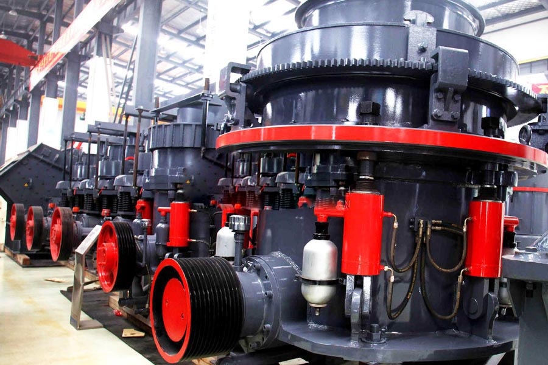

Construction waste crushing production line

Mobile construction waste crushing station for urban construction waste crushing.
Copper Ore Beneficiation Plant
Copper ore crusher introduction, copper ore crusher is mainly used for crushing equipment copper ore, copper ore is the main raw material processing of refined copper and copper products, copper ore through crushing and screening, grinding, magnetic separation and drying procedures gradually elected copper concentrate.
Copper ore processing equipment, construction copper ore crusher, copper ore dressing equipment, copper ore beneficiation process copper ore jaw crusher main frame, eccentric shaft, big belt pulley, flywheel, moving jaw, side guard, elbow board, elbow board seat, adjust gap screw, reset spring, fixed jaw plate and movable jaw and other components.
Native copper and the copper sulphides are usually found in veins associated with igneous intrusions. Chrysocolla and the carbonates are products of the weathering of copper-bearing rocks. Copper was one of the first metals to be worked, because it occurred in native form and needed little refining. Today the main producers are the USA, Russia, Kazakhstan, Georgia, Uzbekistan, Armenia, Zambia, Chile, Peru, Canada, and the Democratic Republic of Congo (formerly Zaire).The high copper prices of recent years are producing a substantial supply response. Copper ore a valuable mineral source for all countries. The biggest copper mines are in Chile and North America, every year many thousands of tonnes of copper ore were produced, The copper ores are extracted by either traditional mining (open pit or underground) or by leaching, and 90 percent of the copper ore was mined from open pit. The copper is then recovered using physical and chemical techniques.

Copper ore crusher, copper ore crushing process, copper ore crushing equipment prices, copper crushing production line, copper crushing production line process include: crushing, grinding, beneficiation three processes. The main equipment used in the processing of copper ores have copper crusher, copper ore mill, copper mill and the like.
Industrial use of copper ore stone:
Copper is found in nearly every home and vehicle, in parts and appliances, and in instruments used in all aspects of modern living, infrastructure and technology. In many respects, modern life would not have been possible without copper.
How copper is mined and copper ore mining crushing plant:
First the copper ore is blasted, loaded and transported to the primary crushers. Then the ore is crushed and screened, with the fine sulfide ore (~-0.5 mm) going to froth flotation cells for recovery of copper.
In the primary crusher, the ore is broken into smaller pieces of less than 25 centimetres in diameter. Crushed ore is then loaded on to a conveyor belt which takes it to the storage bin. In the storage bin, ball mills and other grinding machine grind the ore until it is a fine powder.
As a major mining crushing equipment manufacturer in China, we can supply our clients with jaw crusher, cone crusher, impact crusher and industrial grinding mill etc. Our jaw crusher is a good primary crusher, our impact crusher is widely used as secondary crusher, our cone crusher including cs series cone crusher, hydraulic cone crusher can be used as secondary crusher and tertiary crusher. Beyond this, we also supply ball mill, vertical mill, Raymond mill, trapezium mill etc. to our clients.
Copper ore crusher, copper ore crusher, Zenith produce efficient hydraulic European version of the jaw crusher, hydraulic European version of the crusher, hydraulic cone crusher series of copper ore mill products, can take copper ore from the crushing, the crushing of pre-processing procedures.
Molybdenum mining copper ore crusher ore crusher metal ore crusher, crushing process, the three sections of closed-circuit crushing is the most modern for high hardness copper ore crusher, ore crushing and partial to complete dissociation of the work to improve the follow-up grinding efficiency.
Leave Me A Message, Now
If you have any questions regarding equipment prices, production line configuration or other problems, you can send a message to us, we will contact you soon.